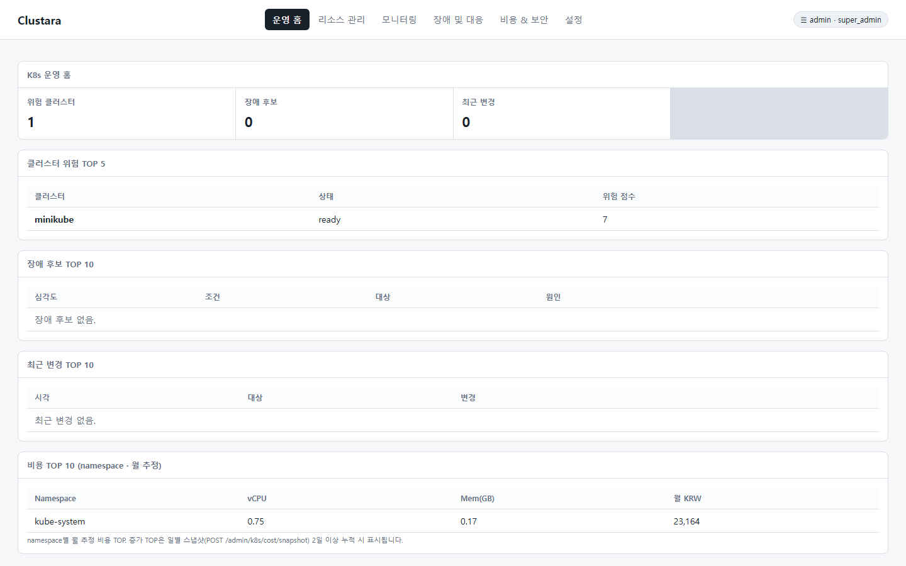
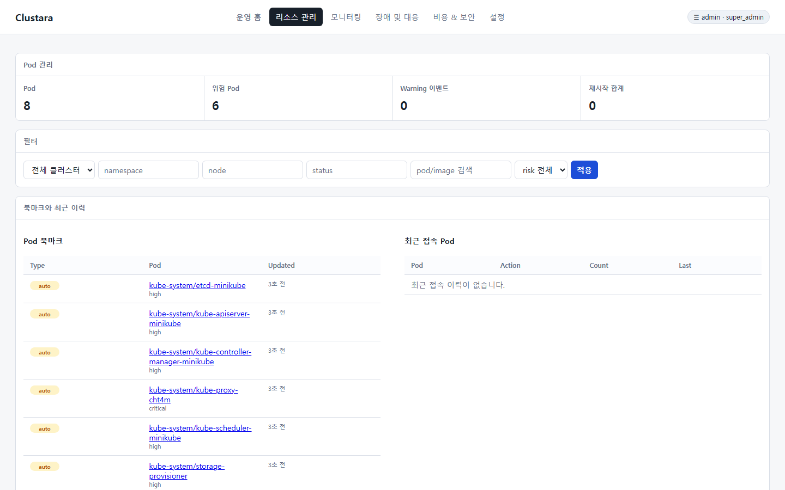
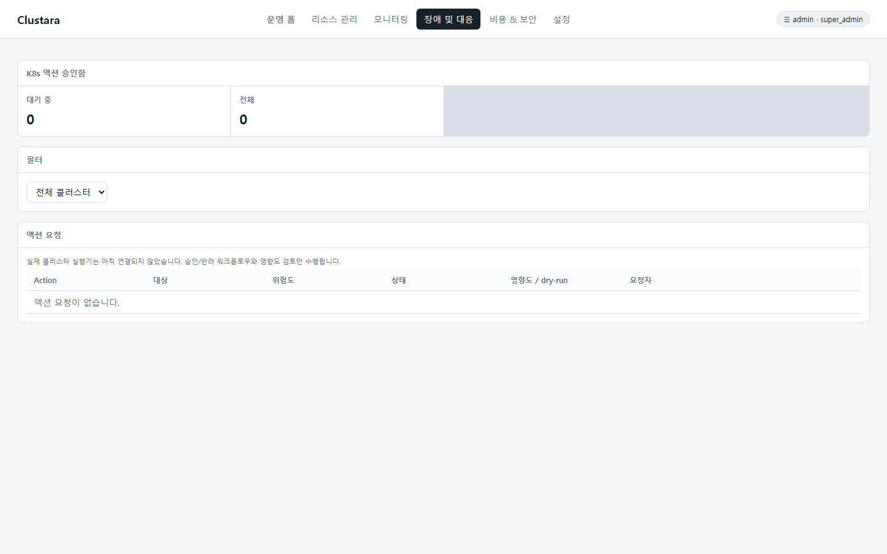

Evidence-Based Root Cause Analysis (RCA)
Maps CrashLoop, OOM, ImagePull, and Readiness Probe failures with recent ConfigMap/Secret deployment histories to propose root cause candidates.
Instantly diagnose cluster root cause analysis (RCA) and risk factors in a single view.
Control impact-analyzed Safety Approval Workflows, GitOps drift tracking, and team FinOps costs on a single platform.
Provides an interactive visual resource canvas and real-time analytics UI to inspect complex cluster states.





Launches via a single binary for effortless deployment, elevating cluster stability and security.
Maps CrashLoop, OOM, ImagePull, and Readiness Probe failures with recent ConfigMap/Secret deployment histories to propose root cause candidates.
Pre-impact analysis and admin approval workflows for Scale, Rollout Restart, Pod Delete, and Web Terminal access with audit replay.
Classifies real-cluster vs Git source drifts in real-time, automating PR drafts and deployment audit trails via GitLab/Bitbucket.
Monitors Pod Security standards, RBAC risk permissions, Trivy/Grype image vulnerabilities, secret expiration, and Falco runtime events.
Estimates monthly projected costs per namespace and team, guiding HPA diagnostics and resource allocation optimization.
Supports AES-GCM encryption, standalone SQLite/PostgreSQL, and offline Docker packages for air-gapped networks.
Unlike read-only dashboards or fragmented CLI tools, Clustara delivers unified remote diagnostics and safety approval environments.
| Comparison Item | Clustara Hub | Legacy `kubectl` / CLI | Generic K8s UI (Lens, etc.) |
|---|---|---|---|
| Root Cause Analysis (RCA) | ✓ Automated Change-Correlated RCA | ✗ Manual log/event collection | △ Single log viewing only |
| Safety Approval Workflow | ✓ Impact assessment & 2-step approval | ✗ Direct execution (Human error risk) | ✗ No approval gates |
| GitOps Drift Tracking | ✓ Git Source diff & PR draft | ✗ Separate diff tool required | ✗ Unsupported |
| FinOps Cost Management | ✓ Monthly cost per team/namespace | ✗ Unsupported | ✗ Unsupported |
| Terminal Access Audit Replay | ✓ Pre-policy & Session recording | ✗ No audit trail | ✗ No audit trail |
| Air-Gapped Offline Deployment | ✓ Single Docker / AGPL-3.0 | ✓ Supported | △ Individual client installation |
Designed to run safely without cluster load or unvetted agent mutation privileges.

Launch in seconds via Docker single command or Go binary to connect your cluster.
docker build -t clustara:dev . docker run -d --name clustara --restart=always -p 9090:9090 -v $PWD/data:/data \ -e GATEWAY_SECRET=$(openssl rand -hex 32) \ -e ADMIN_TOKEN="dev-admin-token" \ clustara:dev
export GATEWAY_SECRET="dev-only-secret" export ADMIN_TOKEN="dev-admin" go run ./cmd/clustara # Admin UI Access: http://localhost:9090/admin (Token: dev-admin)
Key questions and answers regarding Clustara deployment and enterprise operations.
Clustara correlates CrashLoopBackOff, OOMKilled, ImagePullBackOff, Pending, and Readiness Probe failures with recent ConfigMap/Secret deployment histories to uncover root cause candidates with intuitive deep links.
Yes. Operations like Scale, Rollout Restart, Cordon, and Pod Delete require explicit Admin Action Center approval workflows. Impact analysis is performed prior to execution, passing through admin approval gates with role-based session audit replays.
Clustara supports standalone Docker images and embedded SQLite/PostgreSQL databases for 100% offline air-gapped networks. Stored Kubeconfigs, service tokens, and provider keys are encrypted with AES-256-GCM algorithms via GATEWAY_SECRET.
Yes. Integrates with GitLab and Bitbucket Server to detect drifts between live cluster resources and Git source code, automating PR drafts and routing deduplicated notifications to Mattermost channels.
Explore documentation tailored to your operational goals and user roles.
Cluster registration, ingestion architecture, API details, RCA diagnostics, and action execution modules.
Stack & Git source integration, drift classification, PR drafts, and progressive rollout audit guides.
Server launch/shutdown, health checks, DB backup and recovery, and incident runbooks.
Admin UI settings, token management, operational checklists, and Mattermost integration.
Policy engine, approval workflows, and expiring exception grant processing.
Builds, tagging, GitHub releases, and offline Docker package creation.